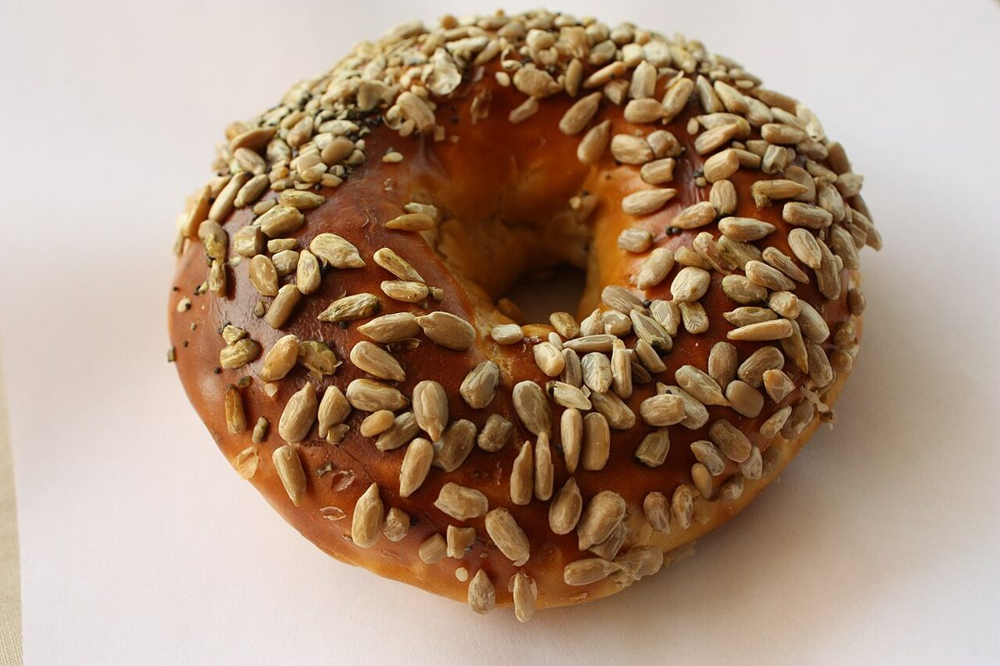

メニュー
お品書きは準備中です
メニュー・価格・提供内容は、確認できしだい掲載します。ここでは、三段・5つずつの枠だけを置いています。
イメージ写真
フリー素材のイメージ写真です。お店の商品を示すものではありません。
パンとコーヒー豆のイメージ




メニュー
メニュー・価格・提供内容は、確認できしだい掲載します。ここでは、三段・5つずつの枠だけを置いています。
フリー素材のイメージ写真です。お店の商品を示すものではありません。
パンとコーヒー豆のイメージ
